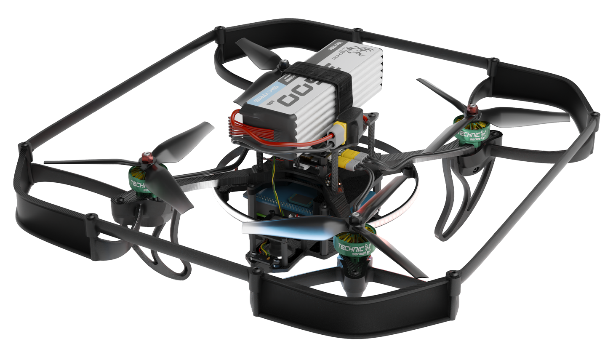

TECHNIC 6S
«Technic» — это учебный конструктор программируемого квадрокоптера, состоящего из популярных открытых компонентов, а также набор необходимой документации и библиотек для работы с ним.
Набор включает в себя полетный контроллер PX4, Orange Pi 5 pro в качестве управляющего бортового компьютера, модуль камеры для реализации полетов с использованием компьютерного зрения, а также набор различных датчиков и другой периферии.

Платформа Technic также включает в себя преднастроенный образ для Orange Pi 5 Pro в полным набором необходимого ПО для работы со всей периферией и программирования автономных полетов. Исходный код платформы Technic и данной документации открыт и доступен на GitHub.